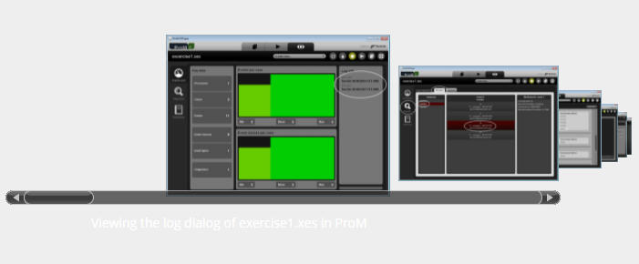
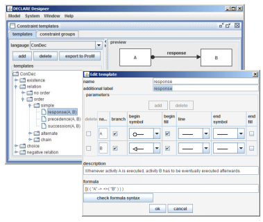

Visual Drift Detection for Sequence Data Analysis of Business Processes
Event sequence data are increasingly available in various application domains, such as business process management, software engineering, or medical pathways. Processes in these domains are typically represented as process diagrams or flow charts. So far, various techniques have been developed for automatically generating such diagrams from event sequence data. An open challenge is the visual analysis of drift phenomena when processes change over time [...].

RuM
RuM is a desktop application that provides a comprehensive set of declarative process mining tools in a single unified package that is easy to use for both novices and experts of process mining. RuM is based on the process modeling language Declare but no prior experience with Declare is required to start using it.[...]

Declarative Process Specifications: Reasoning, Discovery, Monitoring
The declarative modelling of business processes is based upon the specification of behavioural rules that constrain the enactment of workflows. The carry-out of the process is up to the actors, who can vary the execution dynamics as long as they do not violate the constraints imposed by the declarative model. The constraints specify the conditions that require or forbid the execution of activities, either considering them singularly or depending on the occurrence of other ones[...].